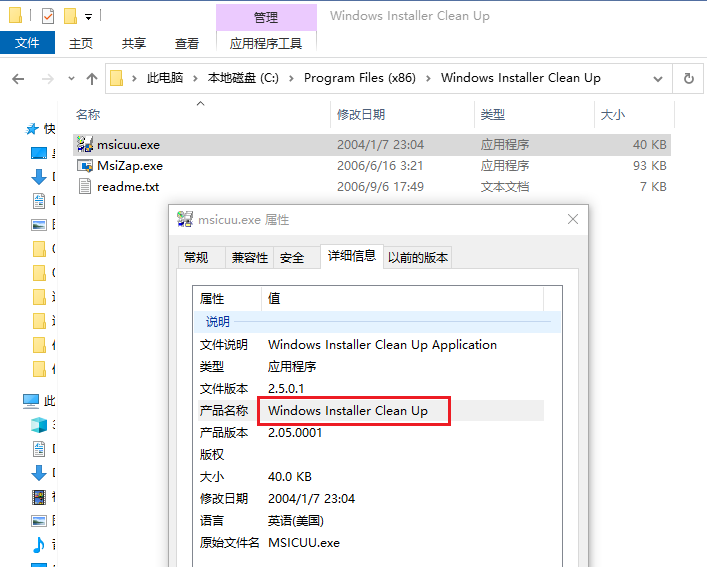
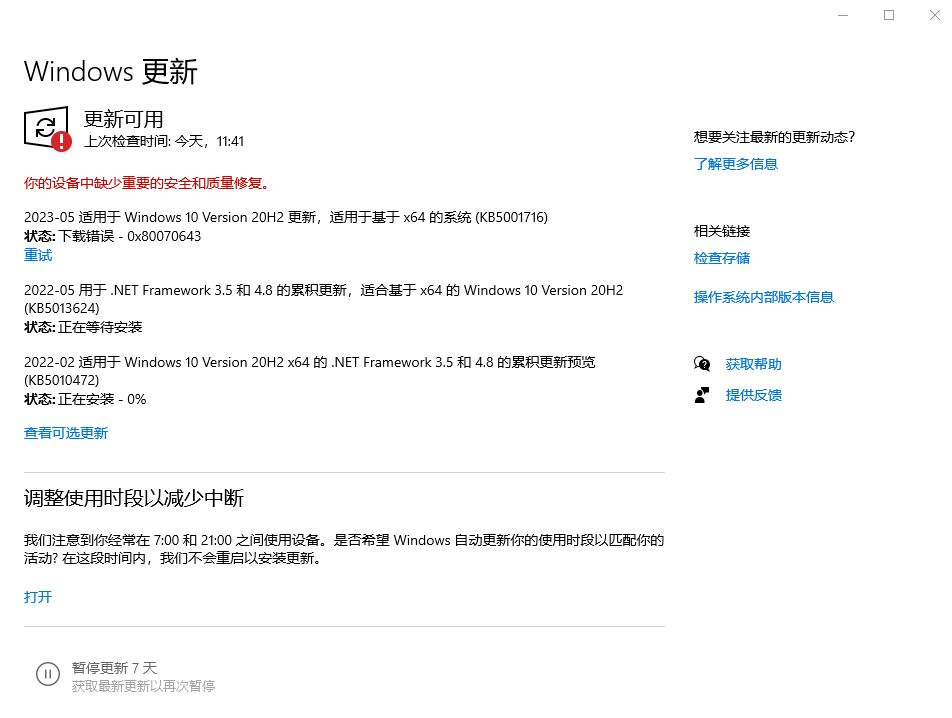
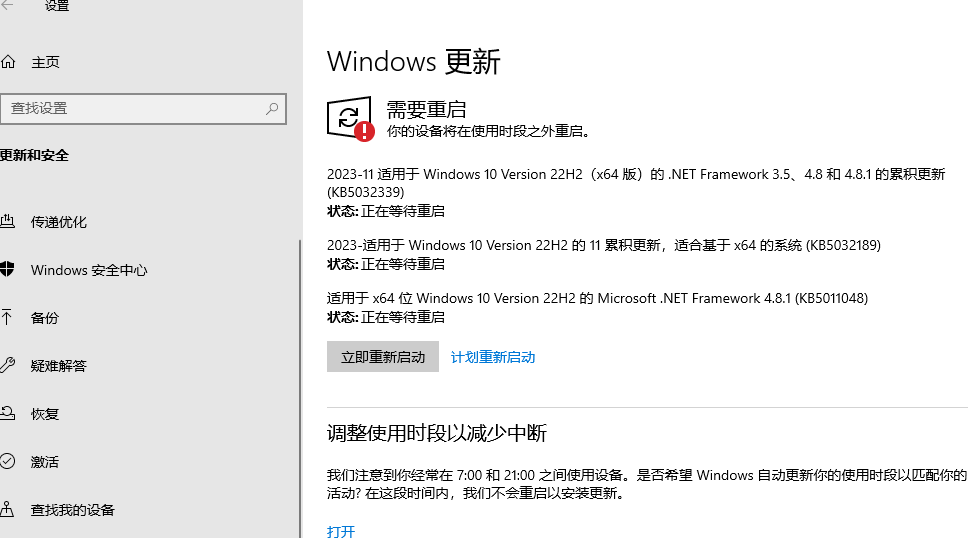

windows使用过程中遇到的问题
平时在windows环境下工作，在所难免的遇到一些问题，在这里记录一下……
清理
这里记录硬盘空间清理相关的东东
系统还原点
不同的系统的进入方式不同。如果是win10，你可以win键+s键唤醒搜索栏，然后搜索“还原点”

磁盘清理

删除以前版本的Windows
关闭休眠
保留的存储
卸载
按道理说卸载软件应该是个很简单的事情，但是有时候也会遇到问题，例如：卸载Visual Studio、SQL Server等，一版都会遇到卸载不完全的问题或者弹窗提示各种问题，还有的就是在控制面板找不到对应的程序……
msicuu.exe和MsiZap.exe
这里说一下两个神器：msicuu.exe和MsiZap.exe。这两款软件够古老的，这里Windows Installer Clean Up - Microsoft Community提到：Windows Installer CleanUp工具已经在2010年停止服务，并建议使用修复阻止程序安装或删除的问题。 我这里也是昨天（2022-02-10）看到了"Windows Installer Clean Up"这个文件夹，并卸载了SQL Server相关的一些软件。别的咱不说了，能用就行了。下面是截图（至于这是哪里下载的，现在也不知道了）：

东西虽好，它可以发现好多原来你看不见的，但是卸载需谨慎啊！这里不小心把C++的某个东东卸载了，之后Visual Studio升级都不行了……
更新
KB5001716 Error 0x80070643
电脑的版本是

尝试了很多办法：.NET Framework 修复；到Microsoft Update Catalog这里下载响应的更新包……
最后是这里的办法解决了该问题：Failed to Install KB5001716 Error 0x80070643 - Microsoft Community
根据上面的解决办法，下载一个更新包安装即可。更新包（点击下载）

多显示器
笔记本外接显示器
在Windows 11中，如果你的笔记本电脑外接了显示器，你可以通过以下步骤来管理鼠标在两个屏幕之间的切换以及如何分配显示内容：
-
调整显示器设置：
- 右键点击桌面空白处，选择“显示设置”。
- 在“显示设置”窗口中，你可以看到两个显示器的预览图。
- 点击并拖动显示器预览图，可以调整它们的相对位置，使其与实际物理位置相匹配。
-
扩展或复制显示：
- 在“显示设置”中，你可以选择“扩展这些显示器”或“仅在1上显示”（或相应的显示器编号）。
- 选择“扩展这些显示器”可以让两个显示器显示不同的内容，而“仅在1上显示”则将所有内容显示在一个显示器上。
-
鼠标在屏幕间切换：
- 当你选择了“扩展这些显示器”后，鼠标可以自由地从一个显示器的边缘移动到另一个显示器。
- 如果你将鼠标移动到一个显示器的边缘，它会自动跳转到另一个显示器的相应边缘。
-
分配特定应用到特定显示器：
- 打开你想要移动到特定显示器的应用。
- 将应用窗口拖动到你想要它显示的显示器上。
- 你也可以右键点击应用窗口，选择“移动”，然后使用键盘上的箭头键将窗口移动到另一个显示器。
-
使用快捷键：
- 你可以使用Windows键 + 左箭头或Windows键 + 右箭头来快速将活动窗口移动到左侧或右侧的显示器。
-
使用第三方软件：
- 如果你想要更高级的多显示器管理功能，可以考虑使用第三方软件，如DisplayFusion或UltraMon等。
记住，你可以根据自己的需要和偏好来调整这些设置。如果你需要在两个显示器之间频繁切换，可能需要一些时间来适应新的布局和操作方式。
绿色版软件开机启动
在Windows 11中设置一个绿色版软件开机启动，可以通过以下几种方法：
-
任务计划程序：
- 打开“任务计划程序”（可以在开始菜单中搜索）。
- 选择“创建基本任务”。
- 给任务起一个名字，然后点击“下一步”。
- 选择“当计算机启动时”作为触发器，然后点击“下一步”。
- 选择“启动程序”，然后点击“下一步”。
- 点击“浏览”按钮，找到你的绿色版软件的可执行文件（.exe），选择它，然后点击“下一步”。
- 完成设置，点击“完成”。
-
注册表：
- 按下Win + R键，输入regedit，打开注册表编辑器。
- 导航到HKEY_CURRENT_USER\Software\Microsoft\Windows\CurrentVersion\Run。
- 右键点击“Run”，选择“新建” -> “字符串值”。
- 给新建的字符串值命名，然后在右侧的“数据”栏中输入你的绿色版软件的完整路径。
- 关闭注册表编辑器。
-
启动文件夹：
- 按下Win + R键，输入shell:startup，打开启动文件夹。
- 将你的绿色版软件的快捷方式复制或移动到这个文件夹中。
-
使用第三方软件：
- 有些第三方软件提供了设置开机启动项的功能，你可以使用这些软件来添加你的绿色版软件。
请注意，修改注册表可能会对系统造成不可预测的影响，因此在进行修改之前建议备份注册表。如果你不熟悉注册表操作，建议使用任务计划程序或启动文件夹的方法。